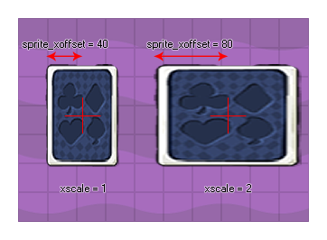

Esta variable de solo lectura devuelve el xoffset local (el componente x del origen como se define en el editor de sprites) del sprite que se ha asignado a la instancia. Este xoffset se devuelve en píxeles y dependerá de la image_xscale, de modo que (por ejemplo) si un sprite cuadrado de 32x32 se define como que tiene el origen x en 16, cuando ese sprite es escalado por 2, esta variable devolverá 32. Si necesita el xoffset sin escala, debe usar sprite_get_xoffset. 
Para funciones relacionadas con sprites, mira aquí.
sprite_xoffset;
Real
if x - sprite_xoffset < 0
{
x = sprite_xoffset;
}
El código anterior comprueba si el borde izquierdo del sprite de la instancia está fuera de la sala y, si lo está, mueve la instancia para que todo el sprite esté visible.